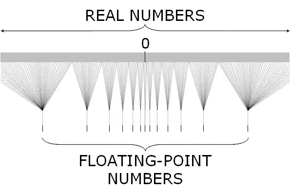

Introducción
Apuntes de clase: sistemas de numeración y punto flotante
1 Breve historia de los sistemas de numeración
| Época | Sistema | Características |
|---|---|---|
| ~30 000 a.C. | Sistemas de conteo primitivos (unarios) | Hueso de Lebombo y hueso de Ishango — muescas talladas en hueso |
| ~2500 a.C. | Babilonios | Base 60, posicional (avance decisivo) |
| ~500 a.C. | Griegos | Numeración con letras |
| 500 a.C. – s. XIV | Romanos | Aditivo: CXCIV = 194, XLVIII = 48 |
| ~s. VIII | Chinos | Multiplicativo, basado en potencias de 10: 一 二 三 四 五 六 七 八 九 十 |
| 36 a.e.c. – ~350 a.e.c. | Mayas | Base 20, con un símbolo para el cero |
| 628 d.C. → ~800 → s. XIII | Indo-arábigo | India (Brahmagupta) → Arabia (Al-Juarismi / Al-Khwarizmi) → Europa (Fibonacci) |
| S. XVII | Pascal | Otras bases |
| S. XVII | Leibniz | Base 2 |
| S. XIX (finales) | Peano y Dedekind | Fundamentación formal |
Ejemplo unario: II + III = IIIII
2 El sistema posicional decimal
\[243 = 2\cdot100+4\cdot10+3 = 2\cdot10^2+4\cdot10^1+3\cdot10^0\]
Fracciones simples:
\[\frac{3}{2}=\frac{6}{4} \qquad 1{,}5 = 1+\frac{5}{10}=1\frac{5}{10}=1\frac12\]
\[\frac{7}{6}=1{,}1\overline{6}=1\cdot10^0+1\cdot10^{-1}+6\cdot10^{-2}+\cdots\]
Forma general de un número posicional, con dígitos \(a_i \in \{0,1,\ldots,9\}\):
\[a_n a_{n-1}\cdots a_0,\, a_{-1}\, a_{-2}\, a_{-3}\cdots\]
\[= a_n\cdot10^n + a_{n-1}\cdot10^{n-1}+\cdots+a_0\cdot10^0+a_{-1}\cdot10^{-1}+a_{-2}\cdot10^{-2}+\cdots\]
\[=\underbrace{\sum_{k=0}^{n} a_k\,10^k}_{\text{parte entera}} + \underbrace{\sum_{k=1}^{\infty} a_{-k}\,10^{-k}}_{\text{parte decimal o mantisa}}\]
3 Otras bases
Convertir \(\left(\dfrac13\right)_{10}\) a base 3.
\[\left(\frac13\right)_{(10)} = (0{,}1)_{(3)}\]
la expansión termina exactamente, porque \(3^{-1}=1/3\).
Para contraste, \((1/10)_{10}\) en base 3 no termina:
\[\left(\frac{1}{10}\right)_{(10)} = (0{,}0\overline{2})_{(3)}\]
Alfabetos según la base:
- Binario: \(\{0,1\}\) → un dígito es un bit
- Octal: \(\{0,1,\ldots,7\}\) → un dígito octal (byte) representa 3 bits
- Hexadecimal: \(\{0,1,\ldots,9,A,B,C,D,E,F\}\) → un dígito hexadecimal (nibble) representa 4 bits
Correspondencia binario ↔︎ octal (3 bits):
| Binario | Octal |
|---|---|
| 000 | 0 |
| 001 | 1 |
| 010 | 2 |
| 011 | 3 |
| 100 | 4 |
| 101 | 5 |
| 110 | 6 |
| 111 | 7 |
\[12_{16} \times F_{16} = 10E_{16}\]
Verificación pasando a decimal:
\[12_{16}=1\cdot16+2=18 \qquad F_{16}=15 \qquad 18\times15=270\]
\[270 = 1\cdot16^2+0\cdot16+14 \;\Longrightarrow\; 10E_{16}\ \checkmark\]
4 El conjunto 𝔽 de números de punto flotante
\[\mathbb{F} = \{\,0,\ \pm(1+f)\,2^{\,n}\,\}\]
- \(n\to\) exponente
- \(1+f \to\) significando (mantisa)
- \(\displaystyle f=\sum_{i=1}^{d} b_i\,2^{-i}, \quad b_i\in\{0,1\}\)
- \(d\) se llama la precisión binaria
4.1 Ejemplos de normalización
\[4=(1+0)\cdot2^2 \qquad\qquad 4=(1+f)\cdot2^1 \;\Rightarrow\; 1+f=2 \Rightarrow f=1\ \text{✗ (fuera de }[0,1))\]
\[5=(1+x)\cdot2^1 \Rightarrow 1+x=\tfrac52=2{,}5 \Rightarrow x=\tfrac32\ \text{✗ (fuera de }[0,1))\]
\[5=(1+f)\cdot2^2 \Rightarrow 1+f=\frac54 \Rightarrow f=\frac14=0{,}25=0{,}01_2\ \checkmark\]
La normalización exige \(1+f\in[1,2)\); por eso el exponente correcto para 5 es \(n=2\), no \(n=1\).
\[\frac13=(1+f)\cdot2^{-1}\Rightarrow 1+f=\frac23\Rightarrow f=-\frac13\ \text{✗ (}f<0\text{)}\]
\[\frac13=(1+f)\cdot2^{-2}\Rightarrow 1+f=\frac43\Rightarrow f=\frac13\ \checkmark\]
En decimal, \(f=0{,}\overline{3}=\dfrac{3}{10}+\dfrac{3}{10^2}+\cdots\). En binario, usando la serie geométrica:
\[\frac13=\frac{1/4}{1-1/4}=\frac14\sum_{k=0}^{\infty}\left(\frac14\right)^k=\sum_{k=1}^{\infty}\frac{1}{4^{k}}=\sum_{k=1}^{\infty}\frac{1}{2^{2k}}=0{,}010101\ldots_2\]
Por tanto se puede aproximar por un número de \(\mathbb {F}\) pero \(\tfrac13\notin \mathbb{F}\) para ningunos \(d\) y \(n\).
5 Cuántos elementos de 𝔽 hay por binade
\[f=\sum_{i=1}^{d}b_i\,2^{-i}=2^{-d}\sum_{i=1}^{d}b_i\,2^{\,d-i}=2^{-d}z\]
\[1+f\in[1,2)\quad\text{para } z\in\{0,1,2,\ldots,2^d-1\}\]
Entre \(2^n\) y \(2^{n+1}\) hay \(2^d\) números que pertenecen a \(\mathbb{F}\).
Referencia de las notas:
float32/float→ \(d=23\);float64/double→ \(d=52\) (IEEE 754).
5.1 Caso \(d=0\)
Solo hay un valor de \(f\) (\(f=0\)), así que cada binade aporta un único punto:
\[n=0:\ \pm(1+0)2^0=\pm1 \qquad n=1:\ \pm2 \qquad n=2:\ \pm4 \qquad n=3:\ \pm8\]
Con \(d=0\), los únicos números posibles son \(\pm2^n\).
5.2 Caso \(d=1\)
Con \(b_1\in\{0,1\}\): \(1+f\in\{1,\ 3/2\}\). Tomando el valor \(3/2\) como ejemplo representativo en cada exponente:
\[n=0:\ \pm\left(1+\tfrac12\right)2^0=\pm\tfrac32 \qquad\qquad n=1:\ \pm\tfrac32\cdot2=\pm3\]
\[n=-1:\ \pm\tfrac32\cdot\tfrac12=\pm\tfrac34 \qquad\qquad n=2:\ \pm\tfrac32\cdot4=\pm6 \qquad\qquad n=-2:\ \pm\tfrac32\cdot\tfrac14=\pm\tfrac38\]
5.3 Simulación de \(\mathbb{F}\) en Julia
Recta numérica (colores por exponente, simulación):
Ver código fuente de la simulación de \(\mathbb{F}\)
Descargar el código fuente la simulación de \(\mathbb{F}\)

\[0{,}1+0{,}2\neq0{,}3\]
6 Espaciado dentro de un binade
Retomando \(f=2^{-d}z\) con \(z\in\{0,\ldots,2^d-1\}\), si \(x_k=(1+2^{-d}k)\,2^n\):
\[x_{k+1}-x_k=\big(1+2^{-d}(k+1)\big)2^n-\big(1+2^{-d}k\big)2^n=2^n\,2^{-d}=2^{n-d}\]
— el mismo espacio; hay \(2^d\) números.
El binade empieza en \(f=0\) (es decir, en \(2^n\)) y termina en \(f_{\max}=\sum_{i=1}^{d}2^{-i}\):
\[(1+f)2^n=\big(1+(2^d-1)2^{-d}\big)2^n=\big(1+1-2^{-d}\big)2^n=2^{\,n+1}-2^{\,n-d}\]
7 Machine epsilon
El número que le sigue a 1 es \(1+2^{-d}\), entonces el épsilon de máquina es
\[\varepsilon_{\text{mach}}=2^{-d}\]
En Julia, eps() para Float64 da \(2^{-52}\).
Definimos \(\text{fl}(x)=\operatorname*{argmin}_{y\in\mathbb{F}}|x-y|\).
La distancia en cada binade \([2^n,2^{n+1})\) es \(2^{n-d}=2^n\varepsilon_{\text{mach}}\).
Cada número real \(x\) está a una distancia a lo más
\[2^{\,n-d-1}=\frac{2^{n}\varepsilon_{\text{mach}}}{2}\qquad\text{de }\mathbb{F}, \qquad\text{es decir,}\qquad |\text{fl}(x)-x|\le2^{\,n-d-1}\]
8 De error absoluto a error relativo
Al dividir por \(|x|\ge2^n\):
\[\frac{|\text{fl}(x)-x|}{|x|}\le\frac12\,\varepsilon_{\text{mach}}\]
\[|\text{fl}(x)-x|\le\frac12\,\varepsilon_{\text{mach}}\,|x|\]
\[\text{fl}(x)=x+\frac12\,\varepsilon_{\text{mach}}\,|x|=x\left(1+\frac12\,\varepsilon_{\text{mach}}\,\operatorname{sgn}(x)\right)=x(1+\epsilon)\quad\text{con }|\epsilon|\le\tfrac12\varepsilon_{\text{mach}}\]
¿Qué quiere decir que el error absoluto puede ser grande y el relativo no?